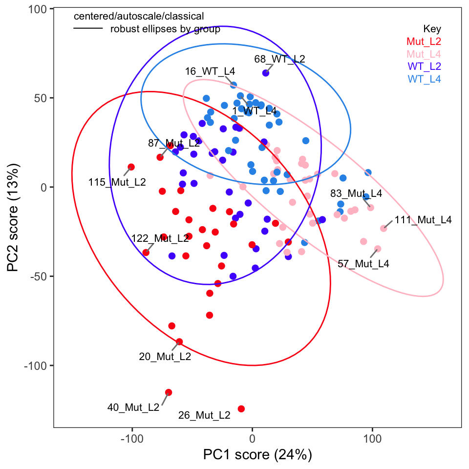
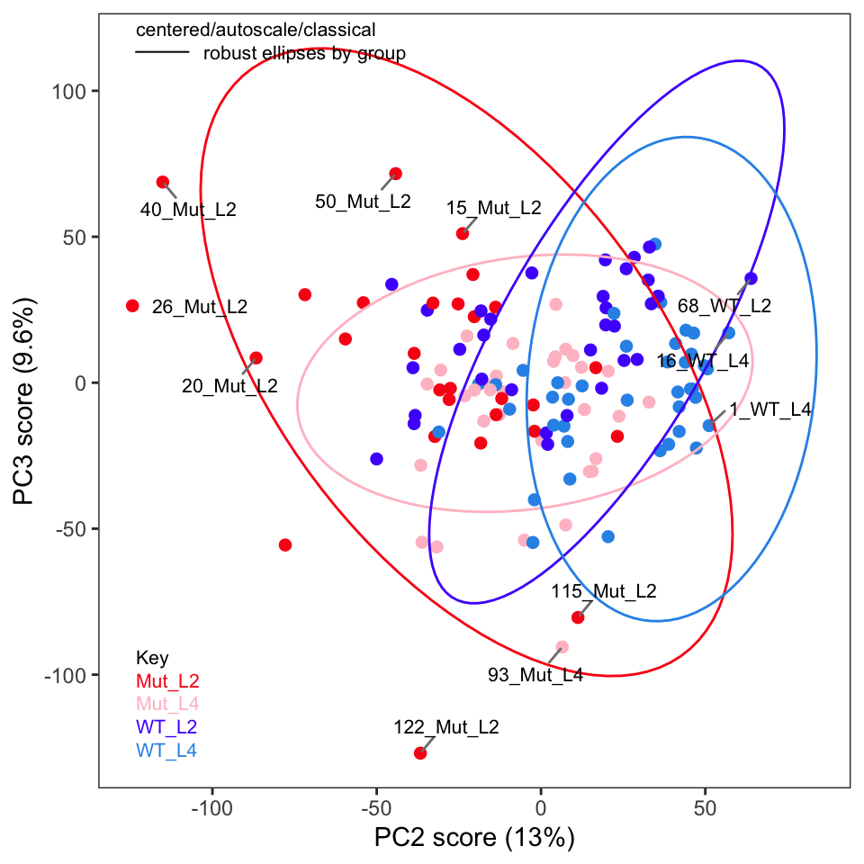
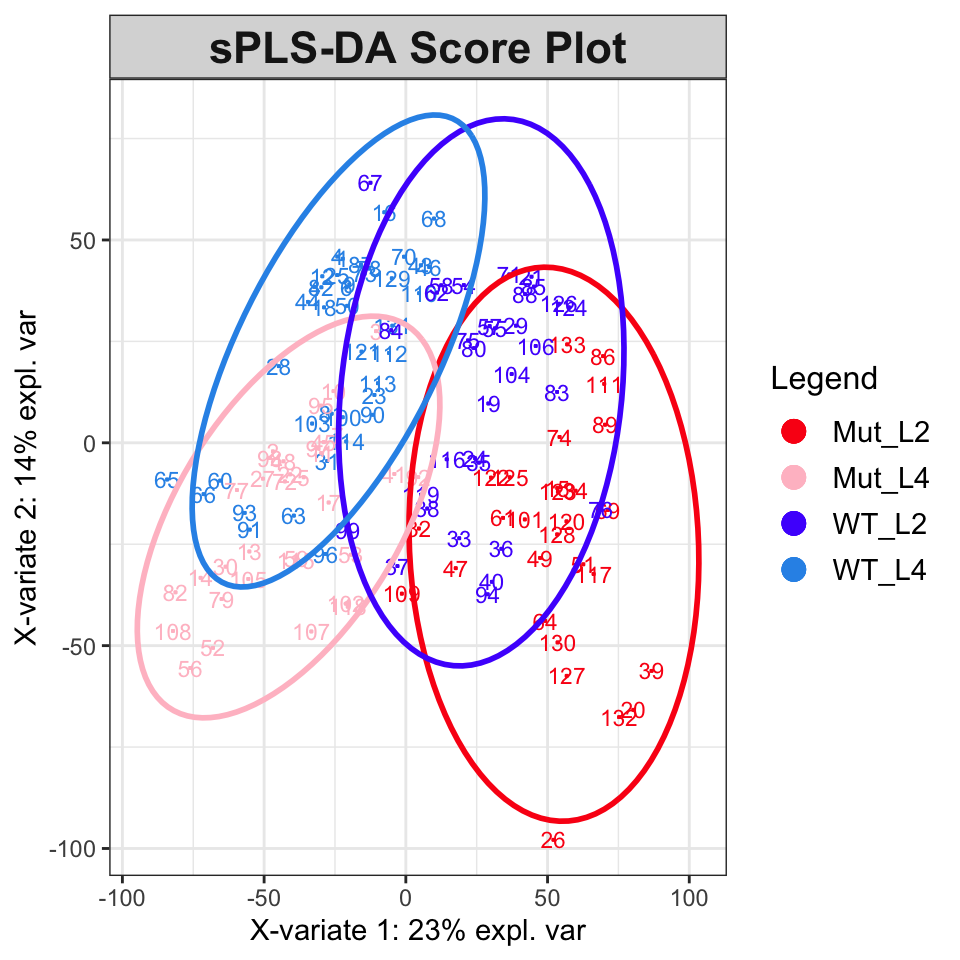
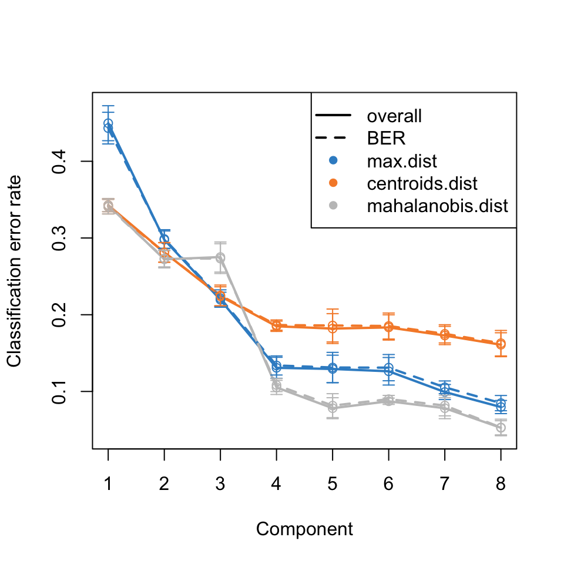

C. elegans metabolic phenotyping study (Blaise 2007)
There are 133 spectra in this set.
The y-axis unit is intensity.
The frequency scale runs from
8.9995 to 5e-04 ppm
There are 8600 frequency values.
The frequency resolution is
0.001 ppm/point.
This data set is not continuous
along the frequency axis.
Here are the data chunks:
beg.freq end.freq size beg.indx end.indx
1 8.9995 5.0005 -3.999 1 4000
2 4.5995 0.0005 -4.599 4001 8600
The spectra are divided into 4 groups:
group no. color symbol alt.sym
1 Mut_L2 28 #FB0D16FF 0 m2
2 Mut_L4 33 #FFC0CBFF 15 m4
3 WT_L2 32 #511CFCFF 1 w2
4 WT_L4 40 #2E94E9FF 16 w4
*** Note: this is an S3 object
of class 'Spectra'Metabolic Phenotyping Protocol Part 3
R
ChemoSpec
Metabolomics
PLS
PLS-DA
Implementing the Statistical Analysis in Metabolic Phenotyping Protocol of Blaise et al.
If you aren’t familiar with ChemoSpec, you might wish to look at the introductory vignette first.
In this series of posts we are following the protocol as described in the printed publication closely (Blaise et al. 2021). The authors have also provided a Jupyter notebook. This is well worth your time, even if Python is not your preferred language, as there are additional examples and discussion for study.
Read in the Data
Load the Spectra object we created in Part 2 so we can summarize it.
Exploratory Data Analysis, Con’t.
If you recall in Part 2 we removed five samples. Let’s re-run PCA without these samples and show the key plots. We will simply report these here without much discussion; they are pretty much as expected.



One thing the published protocol does not explicitly discuss is an inspection of the loadings, but it is covered in the Jupyter notebook. The loadings are useful in order to see if any particular frequencies are driving the separation of the samples in the score plot. Let’s plot the loadings (Figure 4). Remember that these data were autoscaled, and hence all frequencies, including noisy frequencies, will contribute to the separation. If we had not scaled the data, these plots would look dramatically different.
The s-plot is another very useful way to find peaks that are important in separating the samples (Figure 5); we can see that the peaks around \(\delta\) 1.30-1.32, 1.47-1.48, and 3.03-3.07 are important drivers of the separation in the score plot. Having discovered this, one can investigate the source of those peaks.
Supervised Analysis with PLS-DA
ChemoSpec carries out exploratory data analysis, which is an unsupervised process. The next step in the protocol is PLS-DA (partial least squares - discriminant analysis). I have written about ChemoSpec + PLS here if you would like more background on plain PLS. However, PLS-DA is a technique that combines data reduction/variable selection along with classification. We’ll need the mixOmics package (F et al. (2017)) package for this analysis; note that loading it replaces the plotLoadings function from ChemoSpec.
Loading required package: MASSLoading required package: lattice
Loaded mixOmics 6.20.0
Thank you for using mixOmics!
Tutorials: http://mixomics.org
Bookdown vignette: https://mixomicsteam.github.io/Bookdown
Questions, issues: Follow the prompts at http://mixomics.org/contact-us
Cite us: citation('mixOmics')
Attaching package: 'mixOmics'The following object is masked from 'package:ChemoSpec':
plotLoadingsFigure 6 shows the score plot; the results suggest that classification and modeling may be successful. The splsda function carries out a single sparse computation. One computation should not be considered the ideal answer; a better approach is to use cross-validation, for instance the bootsPLS function in the bootsPLS package (Rohart, Le Cao, and Wells (2018) which uses splsda under the hood). However, that computation is too time-consuming to demonstrate here.
plotIndiv(splsda,
col.per.group = c("#FB0D16FF", "#FFC0CBFF", "#511CFCFF", "#2E94E9FF"),
title = "sPLS-DA Score Plot", legend = TRUE, ellipse = TRUE)

To estimate the number of components needed, the perf function can be used. The results are in Figure 7 and suggest that five components are sufficient to describe the data.

At this point, we have several ideas of how to proceed. Going forward, one might choose to focus on accurate classification, or on determining which frequencies should be included in a predictive model. Any model will need to refined and more details extracted. The reader is referred to the case study from the mixOmics folks which covers these tasks and explains the process.
This post was created using ChemoSpec version 6.1.3 and ChemoSpecUtils version 1.0.0.
References
Blaise, Benjamin J., Gonçalo D. S. Correia, Gordon A. Haggart, Izabella Surowiec, Caroline Sands, Matthew R. Lewis, Jake T. M. Pearce, et al. 2021. “Statistical Analysis in Metabolic Phenotyping.” Nature Protocols 16: 4299–4326. https://doi.org/10.1038/s41596-021-00579-1.
F, Rohart, Gautier B, Singh A, and Le Cao K-A. 2017. “mixOmics: An r Package for ’Omics Feature Selection and Multiple Data Integration.” PLoS Computational Biology 13 (11): e1005752. http://www.mixOmics.org.
Rohart, Florian, Kim-Anh Le Cao, and Christine Wells. 2018. bootsPLS: Bootstrap Subsamplings of Sparse Partial Least Squares - Discriminant Analysis for Classification and Signature Identification. https://CRAN.R-project.org/package=bootsPLS.
Reuse
Citation
BibTeX citation:
@online{hanson2022,
author = {Hanson, Bryan},
title = {Metabolic {Phenotyping} {Protocol} {Part} 3},
date = {2022-05-01},
url = {http://chemospec.org/posts/2022-05-01-Protocol-Pt3/2022-05-01-Protocol-Pt3.html},
langid = {en}
}
For attribution, please cite this work as:
Hanson, Bryan. 2022. “Metabolic Phenotyping Protocol Part
3.” May 1, 2022. http://chemospec.org/posts/2022-05-01-Protocol-Pt3/2022-05-01-Protocol-Pt3.html.